مخرج لغةً: محل الخروج، واصطلاحًا: محل خروج الحرف الذي ينقطع عنده صوت النطق به فيتميز به عن غيره، سواء أكان الصوت معتمدًا على مخرج محقق أو مقدر.
هو الذي يعتمد على جزء معين من أجزاء الحلق أو اللسان أو الشفتين.
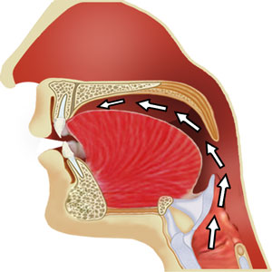
هو الذي ليس له حيز معين وهو مخرج حروف المد الثلاثة.
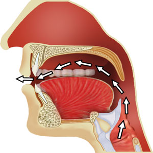
طريقة معرفة مخرج الحرف:
اختلف العلماء في عدد مخارج الحروف إلى ثلاثة مذاهب:
مذهب الخليل بن أحمد الفراهيدي وتابعه ابن الجزري: عدد المخارج العامة هو خمسة مخارج وعدد المخارج الخاصة هي سبعة عشر مخرجًا، وهذا هو مذهب الجمهور.
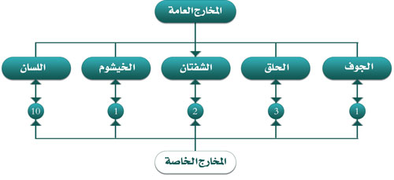
قال السَّمنَّودي في لآلئ البيان:
قَدْ عَدَّها الخلَيِـلُ: سَبْعَة عَشرْ
وَذَاكَ مِنْ بيِـن الْمَذَاهِـبِ اشْتَهَرْ
وقال ابن الجزري في الجزرية:
مَخَـارِجُ الحُـرُوفِ سَبْـعَـةَ عَـشَـرْ
عَلَـى الَّـذِي يَخْتَـارُهُ مَنِ اخْتَـبَـرْ
مذهب سيبويه وتابعه الشاطبي: عدد المخارج العامة هو أربعة مخارج، وعدد المخارج الخاصة هو ستة عشر مخرجًا.
مذهب قطرب وتابعه الفراء: هو كالمذهب الثاني تمامًا إلا أنه جعل اللام والنون والراء يخرجون من مخرج واحد وهو طرف اللسان.
قال عثمان مراد في السلسبيل الشافي:
اختَلَـفَ القُـرَّاءُ في المَخارجِ
علَي مَذاهِـبٍ ثَلاثَـةٍ تَجِي
فَهـي عِنْدَ قُطْـرُبٍ أربَع عَّشَـرْ
وعِنْدَ سِيبَوَيْهِ سِتَّـةَ عَشَـرْ
وَمذْهَبُ الخَليلِ وابنِ الجَزَري
قَـدَّرَها بسَبْعَةٍ وَعَشَـرِ
وَهْوَ الذي جَرَى عَلَيْـهِ الآنا
مُعْظَـمُ مَنْ يُجَوِّدُ القُرءانَا
| المخرج العام | عدد المخارج الخاصة | ||
|---|---|---|---|
| المذهب الأول | المذهب الثاني | المذهب الثالث | |
| الجوف | 1 | 0 | 0 |
| الحلق | 3 | 3 | 3 |
| الشفتان | 2 | 2 | 2 |
| الخيشوم | 1 | 1 | 1 |
| اللسان | 10 | 10 | 8 |
| المجموع | 17 | 16 | 14 |
تنبيهات:
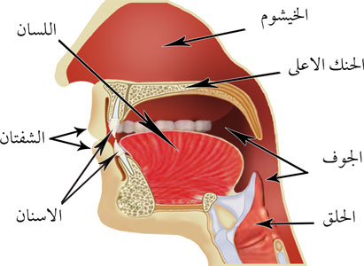
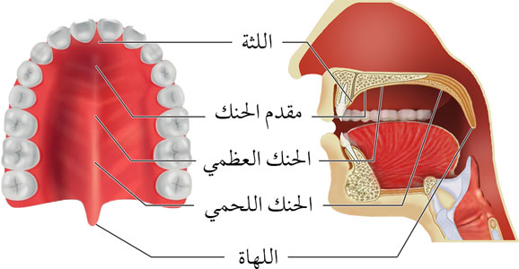
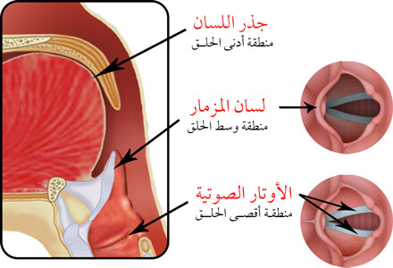
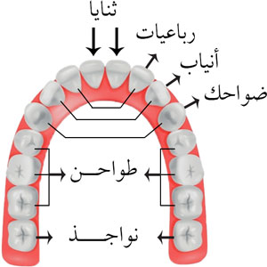
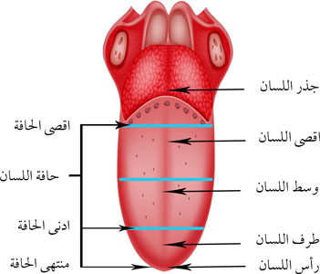
يخرج الحرف المتحرك بتباعد طرفي عضو النطق.
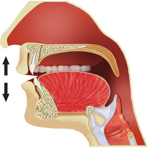
يخرج الحرف الساكن بتصادم طرفي عضو النطق باستثناء أحرف القلقة فهي تخرج بتباعد طرفي عضو النطق.
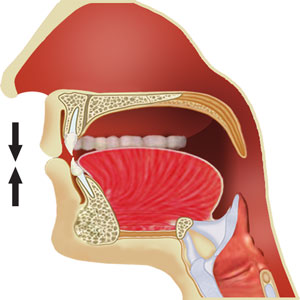
تخرج أحرف المد واللين باهتزاز الأوتار الصوتية في الحنجرة.
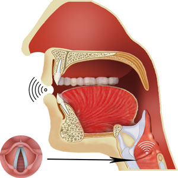
الجوف لغةً :الخلاء، واصطلاحًا: التجويف الممتد من فوق الحنجرة إلى الشفتين.
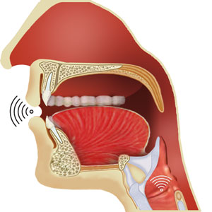
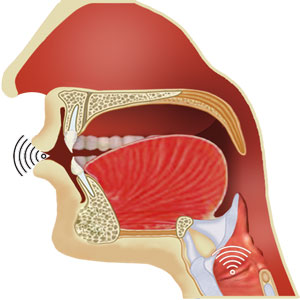
قال ابن الجزري في الجزرية:
فَأَلِفُ الـجَـوْفِ وأُخْتَـاهَـا وَهِي
حُرُوفُ مَـدٍّ للْـهَـوَاءِ تَنْـتَـهِـي
وقال السَّمنَّودي في لآلئ البيان:
فَ(الجَـوْفُ) مِنْهُ: أَلِفٌ وَالْوَاوُ عَنْ
ضَمٍّ وَيَا عَنْ كَسْرٍ انْ كُلٌّ سَكَنْ
الحلق هو الفراغ ما بين الحنجرة وأقصى اللسان، وهو مخرج عام، به ثلاث مخارج خاصة: (أقصى الحلق، وسط الحلق، أدنى الحلق)، ويخرج منه ستة أحرف: (الهمزة، الهاء، العين، الحاء، الغين، الخاء)، وتلقب حروف بالحروف الحلقية لخروجها من الحلق.
قال السَّمنَّودي في لآلئ البيان:
وَ(الحَلْـقُ) مِنْهُ سِتٌّـة قدْ خَرَجَتْ
فَالهمْـزُ: مِنْ أَقْصَاُه، فَالهَا تَبعَـتْ
وَالْعَيْنُ: مِنْ وسَطهِ، فالْحَاءُ
وَالْغَيْـنُ: مـنْ أْدَناهُ، ثُـمَّ الْخَاءُ
مخرج أقصى الحلق يقع في منطقة الأوتار الصوتية، وهو أبعد نقطة في مخرج الحلق وأكثرها غورًا، ويخرج منه حرفان هما: (الهمزة، والهاء).
قال ابن الجزري في الجزرية:
ثُـمَّ لأَقْصَـى الحَـلْـقِ هَـمْـزٌ هَـاءُ
فائدة: تخرج الهمزة الساكنة بانطباق الاوتار الصوتية، وتخرج الهمزة المتحركة بتباعدهما، وتخرج الهاء بانفتاحهما جزئيًا.
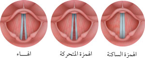
مخرج وسط الحلق يقع في منطقة لسان المزمار، وهو أقرب من أقصى الحلق إلى اللسان، ويخرج منه حرفان هما: (العين، والحاء).
قال ابن الجزري في الجزرية:
ثُمَّ لِـوَسْـطِهِ فَـعَـيْـنٌ حَـاءُ
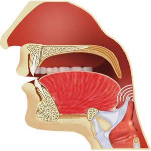
مخرج أدنى الحلق يقع في منطقة جذر اللسان مع الحنك اللحمي، وهو أقرب من المخرجين السابقين إلى اللسان، ويخرج منه حرفان هما: (الغين، والخاء).
قال ابن الجزري في الجزرية:
أَدْنَـاهُ غَـيْنٌ خَـاؤُهَا
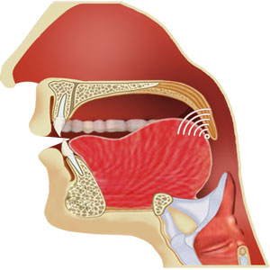
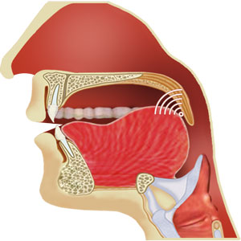
مخرج الشفتان هو مخرج عام، به مخرجان خاصان: (الشفتان فقط، بطن الشفة السفلى مع أطرف الثنايا العليا)، ويخرج منه أربعة أحرف: (الميم، والباء، والواو غير المدية، الفاء).
فائدة: تلقب الحروف التي تخرج من الشفتين بالحروف الشفوية لخروجها من الشفتين.
يخرج منه ثلاثة حروف هي: (والواو غير المدية، والباء، الميم).
قال ابن الجزري في الجزرية:
لِلشَّفَتَيْـنِ الْـوَاوُ بَاءٌ مِـيْـمُ
وقال السَّمنَّودي في لآلئ البيان:
وَ(الشَّفَتَـانِ) مِنهُمَـا ثَلَاثـةُ:
بَـاءٌ فَمِيـمٌ ثُـمَّ وَاٌو تَثْبُـتُ
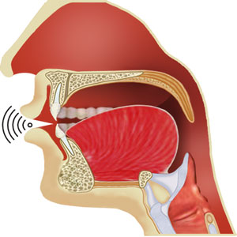
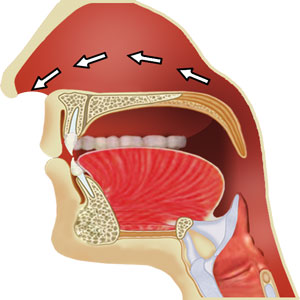
يخرج منه حرف (الفاء).
قال ابن الجزري في الجزرية:
مِـنْ طَرَفَيْهِمَا وَمِـنْ بَـطْـنِ الشَّفَـهْ
فَالْفَا مَعَ اطْـرافِ الثَّنَايَـا المُشْرِفَهْ
وقال السَّمنَّودي في لآلئ البيان:
كَذَاكَ مِـنْ أَطْـرَافِ عُلْيَا يُلْفَى
مَعْ بطْـنِ سُفْلَى شَفَـةٍ حَـرْفُ: الْفَا
الخيشوم هو الفتحة الواصلة بين أعلى الأنف والحلق، وهو مخرج عام مقدر (ليس له حيز معين)، به مخرج خاص واحد، وتخرج منه الغُنّة ولا يخرج منه حروف.
قال ابن الجزري في الجزرية:
وَغُنَّةٌ مَخْـرَجُـهَا الخَـيْـشُومُ
وقال السَّمنَّودي في لآلئ البيان:
وَالنُّـوُن وَالْمِيـمُ الْمُشَدَّدَانِ
مِمَّا مَضَى وَ(الْأنْـفِ) يخَرجَـان
وَحَيْثُ ذانِ: أُدْغِمَـا أَوْ أُخْفِيَـا
فَـذانِ مِنْ (أَنْفٍ فَقَطْ) قْد أَتيَا
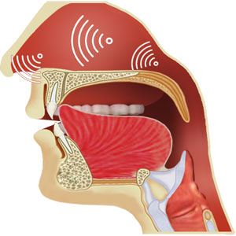
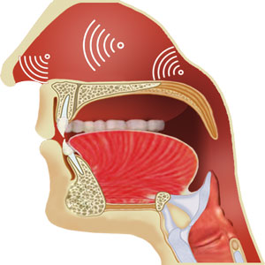
اللسان هو عضو النطق الرئيس، وهو مخرج عام، به عشرة مخارج خاصة، ويخرج منه ثمانية عشر حرفاً.
يخرج منه حرف (القاف).
قال ابن الجزري في الجزرية:
والْـقَافُ أَقْصَى اللِّسَانِ فَـوْقُ ثُمَّ الْـكَـافُ أَسْفَـلُ
وقال السَّمنَّودي في لآلئ البيان:
وَجَاءَ مـنْ أَقْصَى (اللِّسَانِ): الْقَافُ
مَعْ مَا يَحاِذيِـه يَلِيـهِ: الْكَـافُ
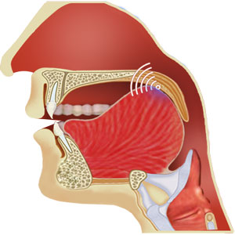
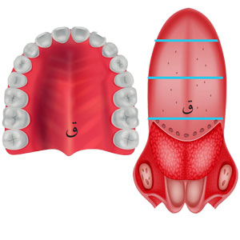
يخرج منه حرف (الكاف).
قال ابن الجزري في الجزرية:
والْـقَافُ أَقْصَى اللِّسَانِ فَـوْقُ ثُمَّ الْـكَـافُ أَسْفَـلُ
وقال السَّمنَّودي في لآلئ البيان:
وَجَاءَ مـنْ أَقْصَى (اللِّسَانِ): الْقَافُ
مَعْ مَا يَحاِذيِـه يَلِيـهِ: الْكَـافُ
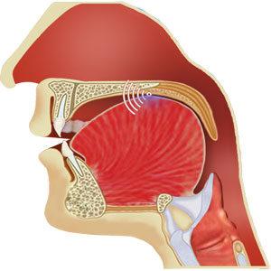
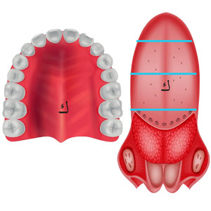
فائدة: يلقب حرف (القاف) و (الكاف) بالحروف اللهوية لخروجهما بالقرب من اللهاة، وهي اللحمة المدلاة في أقصى سقف الحلق.
يخرج منه ثلاثة حروف هي: (الجيم، والشين، والياء غير المدية).
قال ابن الجزري في الجزرية:
وَالْوَسْـطُ فَجِيـمُ الشِّـيـنُ يَا
وقال السَّمنَّودي في لآلئ البيان:
وَالجْيـمُ فَالشِّيُن فَيَاءٌ: منْ وسَطْ
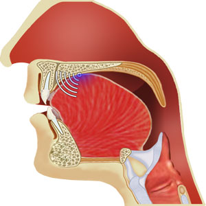
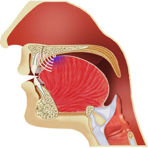
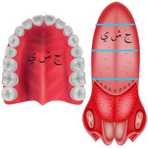
فائدة: تلقب حروف (الجيم) و (الشين) و (الياء غير المدية) بالحروف الشجرية لخروجها من شجر اللسان أي منفتح ما بين اللحيين.
يخرج منه حرف (الضاد).
قال ابن الجزري في الجزرية:
وَالـضَّـادُ مِـنْ حَافَـتِـهِ إِذْ وَلِـيَـا لاضْرَاسَ مِـنْ أَيْـسَرَ أَوْ يُمْنَـاهَـا
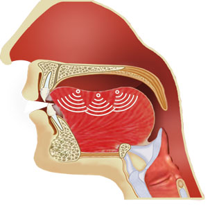
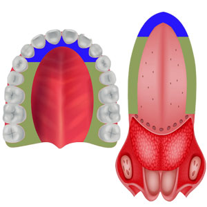
يخرج منه حرف (اللام).
قال ابن الجزري في الجزرية:
وَاللاَّمُ أَدْنَـاهَا لِمُنْـتَـهَـاهَا
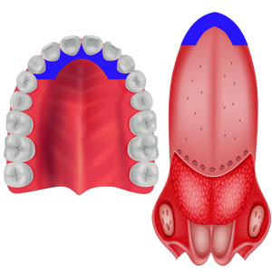
يخرج منه حرف (النون).
قال ابن الجزري في الجزرية:
وَالنُّونُ مِـنْ طَرْفِـهِ تَحْـتُ اجْعَلُوا
وقال السَّمنَّودي في لآلئ البيان:
وَالنُّونُ: مِنْ طَرَفِـه، لَامًا تَـلَا
يخرج منه حرف (الراء).
قال ابن الجزري في الجزرية:
وَالـرَّا يُدَانِـيـهِ لِظَـهْرٍ أَدْخَـلُـوا
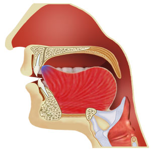
فائدة: تلقب حروف (اللام) و (النون) و (الراء) بالحروف الذلقية لخروجها من ذلق اللسان أي طرفه.
يخرج منه ثلاثة حروف هي: (الطاء، والدال، والتاء).
قال ابن الجزري في الجزرية:
وَالطَّـاءُ وَالدَّالُ وَتَـا مِـنْـهُ وَمِـنْ عُلْيَـا الثَّنَـايَـا
وقال السَّمنَّودي في لآلئ البيان:
وَالطَّـاءُ فَالدَّالُ فتَـا: مِنْـهُ وَمِنْ
أَصْـلِ الثَّنيَتَيِـن مِـنْ عُلْيا زُكِنْ
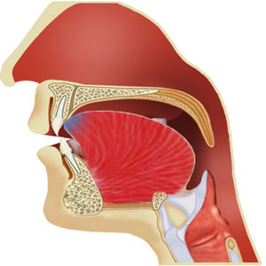
فائدة: تلقب حروف (الطاء) و (الدال) و (التاء) بالحروف النطعية لخروجها بالقرب من نطع الفم أي غاره، وهو الجزء الأمامي من الحنك الأعلى.
يخرج منه ثلاثة حروف هي: (الصاد، والسين، والزاي).
قال ابن الجزري في الجزرية:
لصَّفِـيْـرُ مُسْتَـكِنْ مِنْـهُ وَمِـنْ فَوْقِ الثَّنَـايَـا السُّفْـلَى
وقال السَّمنَّودي في لآلئ البيان:
والَصَّـاُد فَالسُّيـن فَـزَايٌ تْتلىَ:
مِنْـهُ مُصَاحًبا فَويْقَ السُّفْلَـى
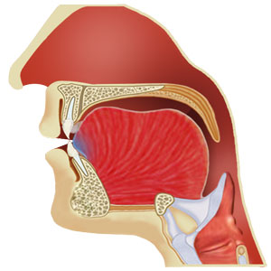
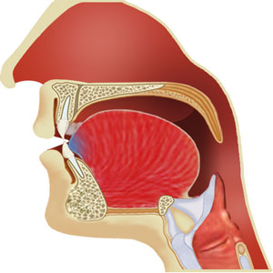
فائدة: تلقب حروف (الصاد) و (السين) و (الزاي) بالحروف الأسلية لخروجها من أسلة اللسان أي طرفه المستدق.
يخرج منه ثلاثة حروف هي: (الظاء، والذال، والثاء).
قال ابن الجزري في الجزرية:
وَالـظَّـاءُ وَالـذَّالُ وَثَـا لِلْعُـلْـيَا مِـنْ طَرَفَيْهِمَا
وقال السَّمنَّودي في لآلئ البيان:
وَالظَّـاءُ فَالذَّاُل فَثَـاءٌ خَرجَتْ:
مِنْـهُ وَمْـن أَطْرَافِ عُلْيَاهَا أَتَتْ
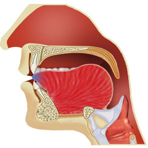
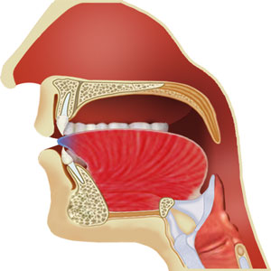
فائدة: تلقب حروف (الظاء) و (الذال) و (الثاء) بالحروف اللثوية لخروجها بالقرب من اللثة، وهي اللحم الذي ينبت فيه الأسنان.
ألقاب الحروف العشرة هي كما يلي:
قال عثمان مراد في السلسبيل الشافي:
ألقابُهُنَّ عَشْرَةٌ جَلِيَّةْ
فَأَحْـرُفُ الجَـوْفِ اسمُها جَوفِيَّةْ
وأَحْـرُفُ الحَلْـقِ اسمُها حَلْقِيَّةْ
والقافُ والكـافُ هُمَا لهْويَّـةْ
والجيمُ والشِّيـنُ ويا شَجْريَّـةْ
والَّلامُ والنُّونُ ورا ذَلْقِيَّـةْ
والطَّاءُ والدَّالُ وتـا نِطْعيَّةْ
وأَحـرُفُ الصَّفيـرِ قُلْ أَسْلِيَّـةْ
والظَّاءُ والذَّالُ وثـا لِثْويَّةْ
وأَحْـرُفُ الشِّفاهِ قُـلْ شَفْويَّةْ
أمَّا الهَوائِيَّـةُ يا صَديقـي
فَهْـيَ حُرُوفُ الجَوفِ بِالتَّحْقِيق
وقال السَّمنَّودي في لآلئ البيان:
وَأحْـرُفُ الْمَدِّ إلِى (الجْوْفِ) انْتَمَتْ
وَهَكـذَا إِلَى (الهْوَاءِ) نُسِبَتْ
وَأحْرُفُ الْحلَـقِ أَتَتْ (َحْلِقَّيـةْ)
وَالْقَـافُ وَالْكَافُ مَعًا (لهَوْيَّةْ)
وَالجِيـمُ وَالشِّيُـن وَيَـاءٌ لُقِّبَـتْ
مَـعْ ضَادِهَا (شَجْرِيَّـةً) كَمَا ثَبَتْ
وَالـلَّامُ وَالنُّـونُ وَرَا (ذَلْقِيَّـةْ)
وَالطَّاءُ وَالدَّالُ وَتَـا (نطْعيَّةْ)
وَأحُرفُ الصِّفيِـر قْل (أَسْليَـةْ)
وَالظَّـاءُ وَالـذَّاُل وَثا (لثْويَّـةْ)
وَالْفَـا وَمِيمٌ بَا وَوَاٌو سُمِّيَتْ
َشْفِويـةً) فتلْكَ عْشَرٌة أَتـتْ
| المخرج العام | المخرج الخاص | الحروف | الألقاب |
|---|---|---|---|
| الجوف | الجوف | الألف المدية | المدية، الهوائية، الجوفية |
| الواو المدية | |||
| الياء المدية | |||
| الحلق | أقصى الحلق | الهمزة | الحلقية |
| الهاء | |||
| وسط الحلق | العين | ||
| الحاء | |||
| أدنى الحلق | الغين | ||
| الخاء | |||
| الشفتان | الشفتان فقط | الواو غير المدية | الشفوية |
| الباء | |||
| الميم | |||
| بطن الشفة السفلى مع أطراف الثنايا العليا | الفاء | ||
| الخيشوم | الخيشوم | الغنة | لا يوجد |
| اللسان | أقصى اللسان مع الحنك اللحمي | القاف | اللهوية |
| أقصى اللسان مع الحنك اللحمي والعظمي | الكاف | ||
| وسط اللسان مع وسط الحنك الأعلى | الجيم | الشجرية | |
| الشين | |||
| الياء غير المدية | |||
| حافة اللسان مع ما يجاورها من الأضراس العليا | الضاد | لا يوجد | |
| أدنى حافتي اللسان إلى منتها طرفه | اللام | الذلقية | |
| طرف اللسان مع ما يحاذيه من لثة الثنايا العليا | النون | ||
| طرف اللسان من جهة الظهر مع لثة الثنايا العليا | الراء | ||
| طرف اللسان مع أصول الثنايا العليا | التاء | النطعية | |
| الدال | |||
| الطاء | |||
| بين طرف اللسان ومن فوق الثنايا السفلى | السين | الأسلية | |
| الصاد | |||
| الزاي | |||
| طرف اللسان مع أطراف الثنايا العليا | الثاء | اللثوية | |
| الذال | |||
| الظاء |
تنبيه: الجدول أعلاه هو حسب قول الجمهور.